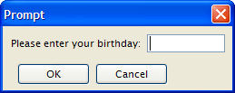

Summary:
See also: Record Input, Programs, Variables
The PROMPT instruction can be used to query for a single value from the user.
In GUI mode, the PROMPT instruction opens a modal window with an OK button and a Cancel button.

The PROMPT statement assigns a user-supplied value to a variable.
PROMPT question
[ ATTRIBUTES ( question-attribute [,...] ) ]
FOR [CHAR[ACTER]] variable
[ HELP number ]
[ ATTRIBUTES ( input-attribute [,...] ) ]
[ dialog-control-block
[...]
END PROMPT ]
where dialog-control-block is one of :
{ ON IDLE idle-seconds
| ON ACTION action-name
| ON KEY ( key-name [,...] )
}
statement
[...]
The following display attributes can be used for both question-attribute and input-attribute:
| Attribute | Description |
| BLACK, BLUE, CYAN, GREEN, MAGENTA, RED, WHITE, YELLOW | The TTY color of the displayed text. |
| BOLD, DIM, INVISIBLE, NORMAL | The TTY font attribute of the displayed text. |
| REVERSE, BLINK, UNDERLINE | The TTY video attribute of the displayed text. |
The following control attributes can be used for input-attribute:
| Attribute | Description |
| CENTURY = string | Specify a year format indicator as defined in the CENTURY attribute of form files. |
| FORMAT = string | Specify a display format as defined in the FORMAT attribute of form files. |
| PICTURE = string | Specify an input picture as defined in the PICTURE attribute of form files. |
| SHIFT = string | Specify uppercase or lowercase shift. Values can be 'up' or 'down'. |
| WITHOUT DEFAULTS [ =bool] | Prompt must show by default the value of the program variable. |
| CANCEL = bool | Indicates if the default cancel action should be added to the dialog. If not specified, the action is added (CANCEL=TRUE). |
| ACCEPT = bool | Indicates if the default accept action should be added to the dialog. If not specified, the action is added (ACCEPT=TRUE). |
You can use the PROMPT instruction to manage a single value input. You provide the text of the question to be displayed to the user and the variable that receives the value entered by the user. The runtime system displays the question in the prompt area (typically a popup window), waits for the user to enter a value, reads whatever value was entered until the user validates (for example with the RETURN key), and stores this value in a response variable. The prompt dialog remains visible until the user enters a response.
To use the PROMPT statement, you must:
The HELP clause specifies the number of a help message to display if the user invokes the help while executing the instruction. The predefined help action is automatically created by the runtime system. You can bind action views to the help action.
The ACCEPT attribute can be set to FALSE to avoid the automatic creation of the accept default action.
The CANCEL attribute can be set to FALSE to avoid the automatic creation of the cancel default action. If the CANCEL=FALSE option is set, no close action will be created, and you must write an ON ACTION close control block to create a close action.
When an PROMPT instruction executes, the runtime system creates a set of default actions.
The following table lists the default actions created for this dialog:
| Default action | Description |
| accept | Validates the PROMPT dialog (validates field criterias) Creation can be avoided with the ACCEPT attribute. |
| cancel | Cancels the PROMPT dialog (no validation, int_flag is set) Creation can be avoided with the CANCEL attribute. |
| close | By default, cancels the PROMPT dialog (no validation, int_flag is set) Default action view is hidden. See Windows closed by the user. |
| help | Shows the help topic defined by the HELP clause. Only created when a HELP clause is defined. |
You can use ON ACTION blocks to execute a sequence of instructions when the user raises a specific action. This is the preferred solution compared to ON KEY blocks, because ON ACTION blocks use abstract names to control user interaction.
Warning: Because of backward compatibility, the prompt is finished after ON IDLE, ON ACTION, ON KEY block execution.
For more details about ON ACTION, see Interaction Model page.
The ON IDLE idle-seconds clause defines a set of instructions that must be executed after idle-seconds of inactivity. The parameter idle-seconds must be an integer literal or variable. If it evaluates to zero, the timeout is disabled.
You should not use the ON IDLE trigger with a short timeout period such as 1 or 2 seconds; The purpose of this trigger is to give the control back to the program after a relatively long period of inactivity (10, 30 or 60 seconds). This is typically the case when the end user leaves the workstation, or got a phone call. The program can then execute some code before the user gets the control back.
For backward compatibility, you can use ON KEY blocks to execute a sequence of instructions when the user presses a specific key. The following key names are accepted by the compiler:
| Key Name | Description |
| ACCEPT | The validation key. |
| INTERRUPT | The interruption key. |
| ESC or ESCAPE | The ESC key (not recommended, use ACCEPT instead). |
| TAB | The TAB key (not recommended). |
| Control-char | A control key where char can be any character except A, D, H, I, J, K, L, M, R, or X. |
| F1 through F255 | A function key. |
| DELETE | The key used to delete a new row in an array. |
| INSERT | The key used to insert a new row in an array. |
| HELP | The help key. |
| LEFT | The left arrow key. |
| RIGHT | The right arrow key. |
| DOWN | The down arrow key. |
| UP | The up arrow key. |
| PREVIOUS or PREVPAGE | The previous page key. |
| NEXT or NEXTPAGE | The next page key. |
Warning: Check carefully the ON KEY CONTROL-? statements because they may result in having duplicate accelerators for multiple actions due to the accelerators defined by Action Defaults. Additionally, ON KEY statements used with ESC, TAB, UP, DOWN, LEFT, RIGHT, HELP, NEXT, PREVIOUS, INSERT, CONTROL-M, CONTROL-X, CONTROL-V, CONTROL-C and CONTROL-A should be avoided for use in GUI programs, because it's very likely to clash with default accelerators defined in the Action Defaults.
01MAIN02DEFINE birth DATE03DEFINE chkey CHAR(1)04PROMPT "Please enter your birthday: " FOR birth05DISPLAY "Your birthday is : " || birth06PROMPT "Now press a key... " FOR CHAR chkey07DISPLAY "You pressed: " || chkey08END MAIN
01MAIN02DEFINE birth DATE03LET INT_FLAG = FALSE04PROMPT "Please enter your birthday: " FOR birth05IF INT_FLAG THEN06DISPLAY "Interrupt received."07ELSE08DISPLAY "Your birthday is : " || birth09END IF10END MAIN
01MAIN02DEFINE birth DATE03LET birth = TODAY04PROMPT "Please enter your birthday: " FOR birth05ATTRIBUTES(WITHOUT DEFAULTS)06ON ACTION action107DISPLAY "Action 1"08END PROMPT09DISPLAY "Your birthday is " || birth10END MAIN